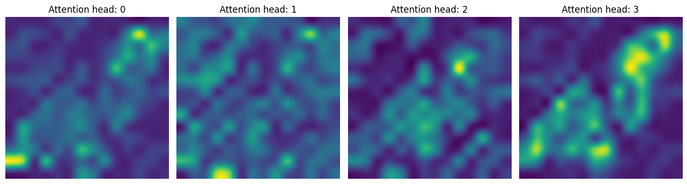
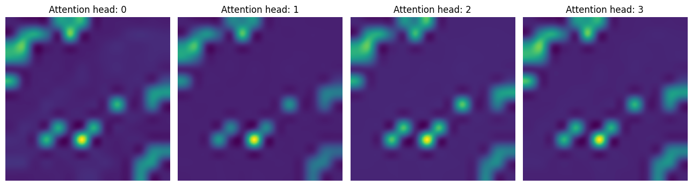
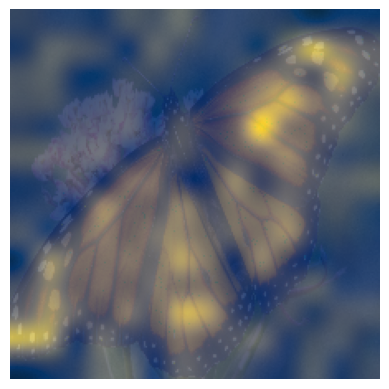

Class Attention Image Transformers with LayerScale
Author: Sayak Paul
Date created: 2022/09/19
Last modified: 2022/11/21
Description: Implementing an image transformer equipped with Class Attention and LayerScale.

Introduction
In this tutorial, we implement the CaiT (Class-Attention in Image Transformers) proposed in Going deeper with Image Transformers by Touvron et al. Depth scaling, i.e. increasing the model depth for obtaining better performance and generalization has been quite successful for convolutional neural networks (Tan et al., Dollár et al., for example). But applying the same model scaling principles to Vision Transformers (Dosovitskiy et al.) doesn't translate equally well – their performance gets saturated quickly with depth scaling. Note that one assumption here is that the underlying pre-training dataset is always kept fixed when performing model scaling.
In the CaiT paper, the authors investigate this phenomenon and propose modifications to the vanilla ViT (Vision Transformers) architecture to mitigate this problem.
The tutorial is structured like so:
- Implementation of the individual blocks of CaiT
- Collating all the blocks to create the CaiT model
- Loading a pre-trained CaiT model
- Obtaining prediction results
- Visualization of the different attention layers of CaiT
The readers are assumed to be familiar with Vision Transformers already. Here is an implementation of Vision Transformers in Keras: Image classification with Vision Transformer.
Imports
import os
os.environ["KERAS_BACKEND"] = "tensorflow"
import io
import typing
from urllib.request import urlopen
import matplotlib.pyplot as plt
import numpy as np
import PIL
import keras
from keras import layers
from keras import ops
The LayerScale layer
We begin by implementing a LayerScale layer which is one of the two modifications proposed in the CaiT paper.
When increasing the depth of the ViT models, they meet with optimization instability and eventually don't converge. The residual connections within each Transformer block introduce information bottleneck. When there is an increased amount of depth, this bottleneck can quickly explode and deviate the optimization pathway for the underlying model.
The following equations denote where residual connections are added within a Transformer block:

where, SA stands for self-attention, FFN stands for feed-forward network, and eta denotes the LayerNorm operator (Ba et al.).
LayerScale is formally implemented like so:

where, the lambdas are learnable parameters and are initialized with a very small value ({0.1, 1e-5, 1e-6}). diag represents a diagonal matrix.
Intuitively, LayerScale helps control the contribution of the residual branches. The learnable parameters of LayerScale are initialized to a small value to let the branches act like identity functions and then let them figure out the degrees of interactions during the training. The diagonal matrix additionally helps control the contributions of the individual dimensions of the residual inputs as it is applied on a per-channel basis.
The practical implementation of LayerScale is simpler than it might sound.
class LayerScale(layers.Layer):
"""LayerScale as introduced in CaiT: https://arxiv.org/abs/2103.17239.
Args:
init_values (float): value to initialize the diagonal matrix of LayerScale.
projection_dim (int): projection dimension used in LayerScale.
"""
def __init__(self, init_values: float, projection_dim: int, **kwargs):
super().__init__(**kwargs)
self.gamma = self.add_weight(
shape=(projection_dim,),
initializer=keras.initializers.Constant(init_values),
)
def call(self, x, training=False):
return x * self.gamma
Stochastic depth layer
Since its introduction (Huang et al.), Stochastic Depth has become a favorite component in almost all modern neural network architectures. CaiT is no exception. Discussing Stochastic Depth is out of scope for this notebook. You can refer to this resource in case you need a refresher.
class StochasticDepth(layers.Layer):
"""Stochastic Depth layer (https://arxiv.org/abs/1603.09382).
Reference:
https://github.com/rwightman/pytorch-image-models
"""
def __init__(self, drop_prob: float, **kwargs):
super().__init__(**kwargs)
self.drop_prob = drop_prob
self.seed_generator = keras.random.SeedGenerator(1337)
def call(self, x, training=False):
if training:
keep_prob = 1 - self.drop_prob
shape = (ops.shape(x)[0],) + (1,) * (len(x.shape) - 1)
random_tensor = keep_prob + ops.random.uniform(
shape, minval=0, maxval=1, seed=self.seed_generator
)
random_tensor = ops.floor(random_tensor)
return (x / keep_prob) * random_tensor
return x
Class attention
The vanilla ViT uses self-attention (SA) layers for modelling how the image patches and the learnable CLS token interact with each other. The CaiT authors propose to decouple the attention layers responsible for attending to the image patches and the CLS tokens.
When using ViTs for any discriminative tasks (classification, for example), we usually take the representations belonging to the CLS token and then pass them to the task-specific heads. This is as opposed to using something like global average pooling as is typically done in convolutional neural networks.
The interactions between the CLS token and other image patches are processed uniformly through self-attention layers. As the CaiT authors point out, this setup has got an entangled effect. On one hand, the self-attention layers are responsible for modelling the image patches. On the other hand, they're also responsible for summarizing the modelled information via the CLS token so that it's useful for the learning objective.
To help disentangle these two things, the authors propose to:
- Introduce the CLS token at a later stage in the network.
- Model the interaction between the CLS token and the representations related to the image patches through a separate set of attention layers. The authors call this Class Attention (CA).
The figure below (taken from the original paper) depicts this idea:

This is achieved by treating the CLS token embeddings as the queries in the CA layers. CLS token embeddings and the image patch embeddings are fed as keys as well values.
Note that "embeddings" and "representations" have been used interchangeably here.
class ClassAttention(layers.Layer):
"""Class attention as proposed in CaiT: https://arxiv.org/abs/2103.17239.
Args:
projection_dim (int): projection dimension for the query, key, and value
of attention.
num_heads (int): number of attention heads.
dropout_rate (float): dropout rate to be used for dropout in the attention
scores as well as the final projected outputs.
"""
def __init__(
self, projection_dim: int, num_heads: int, dropout_rate: float, **kwargs
):
super().__init__(**kwargs)
self.num_heads = num_heads
head_dim = projection_dim // num_heads
self.scale = head_dim**-0.5
self.q = layers.Dense(projection_dim)
self.k = layers.Dense(projection_dim)
self.v = layers.Dense(projection_dim)
self.attn_drop = layers.Dropout(dropout_rate)
self.proj = layers.Dense(projection_dim)
self.proj_drop = layers.Dropout(dropout_rate)
def call(self, x, training=False):
batch_size, num_patches, num_channels = (
ops.shape(x)[0],
ops.shape(x)[1],
ops.shape(x)[2],
)
# Query projection. `cls_token` embeddings are queries.
q = ops.expand_dims(self.q(x[:, 0]), axis=1)
q = ops.reshape(
q, (batch_size, 1, self.num_heads, num_channels // self.num_heads)
) # Shape: (batch_size, 1, num_heads, dimension_per_head)
q = ops.transpose(q, axes=[0, 2, 1, 3])
scale = ops.cast(self.scale, dtype=q.dtype)
q = q * scale
# Key projection. Patch embeddings as well the cls embedding are used as keys.
k = self.k(x)
k = ops.reshape(
k, (batch_size, num_patches, self.num_heads, num_channels // self.num_heads)
) # Shape: (batch_size, num_tokens, num_heads, dimension_per_head)
k = ops.transpose(k, axes=[0, 2, 3, 1])
# Value projection. Patch embeddings as well the cls embedding are used as values.
v = self.v(x)
v = ops.reshape(
v, (batch_size, num_patches, self.num_heads, num_channels // self.num_heads)
)
v = ops.transpose(v, axes=[0, 2, 1, 3])
# Calculate attention scores between cls_token embedding and patch embeddings.
attn = ops.matmul(q, k)
attn = ops.nn.softmax(attn, axis=-1)
attn = self.attn_drop(attn, training=training)
x_cls = ops.matmul(attn, v)
x_cls = ops.transpose(x_cls, axes=[0, 2, 1, 3])
x_cls = ops.reshape(x_cls, (batch_size, 1, num_channels))
x_cls = self.proj(x_cls)
x_cls = self.proj_drop(x_cls, training=training)
return x_cls, attn
Talking Head Attention
The CaiT authors use the Talking Head attention (Shazeer et al.) instead of the vanilla scaled dot-product multi-head attention used in the original Transformer paper (Vaswani et al.). They introduce two linear projections before and after the softmax operations for obtaining better results.
For a more rigorous treatment of the Talking Head attention and the vanilla attention mechanisms, please refer to their respective papers (linked above).
class TalkingHeadAttention(layers.Layer):
"""Talking-head attention as proposed in CaiT: https://arxiv.org/abs/2003.02436.
Args:
projection_dim (int): projection dimension for the query, key, and value
of attention.
num_heads (int): number of attention heads.
dropout_rate (float): dropout rate to be used for dropout in the attention
scores as well as the final projected outputs.
"""
def __init__(
self, projection_dim: int, num_heads: int, dropout_rate: float, **kwargs
):
super().__init__(**kwargs)
self.num_heads = num_heads
head_dim = projection_dim // self.num_heads
self.scale = head_dim**-0.5
self.qkv = layers.Dense(projection_dim * 3)
self.attn_drop = layers.Dropout(dropout_rate)
self.proj = layers.Dense(projection_dim)
self.proj_l = layers.Dense(self.num_heads)
self.proj_w = layers.Dense(self.num_heads)
self.proj_drop = layers.Dropout(dropout_rate)
def call(self, x, training=False):
B, N, C = ops.shape(x)[0], ops.shape(x)[1], ops.shape(x)[2]
# Project the inputs all at once.
qkv = self.qkv(x)
# Reshape the projected output so that they're segregated in terms of
# query, key, and value projections.
qkv = ops.reshape(qkv, (B, N, 3, self.num_heads, C // self.num_heads))
# Transpose so that the `num_heads` becomes the leading dimensions.
# Helps to better segregate the representation sub-spaces.
qkv = ops.transpose(qkv, axes=[2, 0, 3, 1, 4])
scale = ops.cast(self.scale, dtype=qkv.dtype)
q, k, v = qkv[0] * scale, qkv[1], qkv[2]
# Obtain the raw attention scores.
attn = ops.matmul(q, ops.transpose(k, axes=[0, 1, 3, 2]))
# Linear projection of the similarities between the query and key projections.
attn = self.proj_l(ops.transpose(attn, axes=[0, 2, 3, 1]))
# Normalize the attention scores.
attn = ops.transpose(attn, axes=[0, 3, 1, 2])
attn = ops.nn.softmax(attn, axis=-1)
# Linear projection on the softmaxed scores.
attn = self.proj_w(ops.transpose(attn, axes=[0, 2, 3, 1]))
attn = ops.transpose(attn, axes=[0, 3, 1, 2])
attn = self.attn_drop(attn, training=training)
# Final set of projections as done in the vanilla attention mechanism.
x = ops.matmul(attn, v)
x = ops.transpose(x, axes=[0, 2, 1, 3])
x = ops.reshape(x, (B, N, C))
x = self.proj(x)
x = self.proj_drop(x, training=training)
return x, attn
Feed-forward Network
Next, we implement the feed-forward network which is one of the components within a Transformer block.
def mlp(x, dropout_rate: float, hidden_units: typing.List[int]):
"""FFN for a Transformer block."""
for idx, units in enumerate(hidden_units):
x = layers.Dense(
units,
activation=ops.nn.gelu if idx == 0 else None,
bias_initializer=keras.initializers.RandomNormal(stddev=1e-6),
)(x)
x = layers.Dropout(dropout_rate)(x)
return x
Other blocks
In the next two cells, we implement the remaining blocks as standalone functions:
LayerScaleBlockClassAttention()which returns akeras.Model. It is a Transformer block equipped with Class Attention, LayerScale, and Stochastic Depth. It operates on the CLS embeddings and the image patch embeddings.LayerScaleBlock()which returns akeras.model. It is also a Transformer block that operates only on the embeddings of the image patches. It is equipped with LayerScale and Stochastic Depth.
def LayerScaleBlockClassAttention(
projection_dim: int,
num_heads: int,
layer_norm_eps: float,
init_values: float,
mlp_units: typing.List[int],
dropout_rate: float,
sd_prob: float,
name: str,
):
"""Pre-norm transformer block meant to be applied to the embeddings of the
cls token and the embeddings of image patches.
Includes LayerScale and Stochastic Depth.
Args:
projection_dim (int): projection dimension to be used in the
Transformer blocks and patch projection layer.
num_heads (int): number of attention heads.
layer_norm_eps (float): epsilon to be used for Layer Normalization.
init_values (float): initial value for the diagonal matrix used in LayerScale.
mlp_units (List[int]): dimensions of the feed-forward network used in
the Transformer blocks.
dropout_rate (float): dropout rate to be used for dropout in the attention
scores as well as the final projected outputs.
sd_prob (float): stochastic depth rate.
name (str): a name identifier for the block.
Returns:
A keras.Model instance.
"""
x = keras.Input((None, projection_dim))
x_cls = keras.Input((None, projection_dim))
inputs = keras.layers.Concatenate(axis=1)([x_cls, x])
# Class attention (CA).
x1 = layers.LayerNormalization(epsilon=layer_norm_eps)(inputs)
attn_output, attn_scores = ClassAttention(projection_dim, num_heads, dropout_rate)(
x1
)
attn_output = (
LayerScale(init_values, projection_dim)(attn_output)
if init_values
else attn_output
)
attn_output = StochasticDepth(sd_prob)(attn_output) if sd_prob else attn_output
x2 = keras.layers.Add()([x_cls, attn_output])
# FFN.
x3 = layers.LayerNormalization(epsilon=layer_norm_eps)(x2)
x4 = mlp(x3, hidden_units=mlp_units, dropout_rate=dropout_rate)
x4 = LayerScale(init_values, projection_dim)(x4) if init_values else x4
x4 = StochasticDepth(sd_prob)(x4) if sd_prob else x4
outputs = keras.layers.Add()([x2, x4])
return keras.Model([x, x_cls], [outputs, attn_scores], name=name)
def LayerScaleBlock(
projection_dim: int,
num_heads: int,
layer_norm_eps: float,
init_values: float,
mlp_units: typing.List[int],
dropout_rate: float,
sd_prob: float,
name: str,
):
"""Pre-norm transformer block meant to be applied to the embeddings of the
image patches.
Includes LayerScale and Stochastic Depth.
Args:
projection_dim (int): projection dimension to be used in the
Transformer blocks and patch projection layer.
num_heads (int): number of attention heads.
layer_norm_eps (float): epsilon to be used for Layer Normalization.
init_values (float): initial value for the diagonal matrix used in LayerScale.
mlp_units (List[int]): dimensions of the feed-forward network used in
the Transformer blocks.
dropout_rate (float): dropout rate to be used for dropout in the attention
scores as well as the final projected outputs.
sd_prob (float): stochastic depth rate.
name (str): a name identifier for the block.
Returns:
A keras.Model instance.
"""
encoded_patches = keras.Input((None, projection_dim))
# Self-attention.
x1 = layers.LayerNormalization(epsilon=layer_norm_eps)(encoded_patches)
attn_output, attn_scores = TalkingHeadAttention(
projection_dim, num_heads, dropout_rate
)(x1)
attn_output = (
LayerScale(init_values, projection_dim)(attn_output)
if init_values
else attn_output
)
attn_output = StochasticDepth(sd_prob)(attn_output) if sd_prob else attn_output
x2 = layers.Add()([encoded_patches, attn_output])
# FFN.
x3 = layers.LayerNormalization(epsilon=layer_norm_eps)(x2)
x4 = mlp(x3, hidden_units=mlp_units, dropout_rate=dropout_rate)
x4 = LayerScale(init_values, projection_dim)(x4) if init_values else x4
x4 = StochasticDepth(sd_prob)(x4) if sd_prob else x4
outputs = layers.Add()([x2, x4])
return keras.Model(encoded_patches, [outputs, attn_scores], name=name)
Given all these blocks, we are now ready to collate them into the final CaiT model.
Putting the pieces together: The CaiT model
class CaiT(keras.Model):
"""CaiT model.
Args:
projection_dim (int): projection dimension to be used in the
Transformer blocks and patch projection layer.
patch_size (int): patch size of the input images.
num_patches (int): number of patches after extracting the image patches.
init_values (float): initial value for the diagonal matrix used in LayerScale.
mlp_units: (List[int]): dimensions of the feed-forward network used in
the Transformer blocks.
sa_ffn_layers (int): number of self-attention Transformer blocks.
ca_ffn_layers (int): number of class-attention Transformer blocks.
num_heads (int): number of attention heads.
layer_norm_eps (float): epsilon to be used for Layer Normalization.
dropout_rate (float): dropout rate to be used for dropout in the attention
scores as well as the final projected outputs.
sd_prob (float): stochastic depth rate.
global_pool (str): denotes how to pool the representations coming out of
the final Transformer block.
pre_logits (bool): if set to True then don't add a classification head.
num_classes (int): number of classes to construct the final classification
layer with.
"""
def __init__(
self,
projection_dim: int,
patch_size: int,
num_patches: int,
init_values: float,
mlp_units: typing.List[int],
sa_ffn_layers: int,
ca_ffn_layers: int,
num_heads: int,
layer_norm_eps: float,
dropout_rate: float,
sd_prob: float,
global_pool: str,
pre_logits: bool,
num_classes: int,
**kwargs,
):
if global_pool not in ["token", "avg"]:
raise ValueError(
'Invalid value received for `global_pool`, should be either `"token"` or `"avg"`.'
)
super().__init__(**kwargs)
# Responsible for patchifying the input images and the linearly projecting them.
self.projection = keras.Sequential(
[
layers.Conv2D(
filters=projection_dim,
kernel_size=(patch_size, patch_size),
strides=(patch_size, patch_size),
padding="VALID",
name="conv_projection",
kernel_initializer="lecun_normal",
),
layers.Reshape(
target_shape=(-1, projection_dim),
name="flatten_projection",
),
],
name="projection",
)
# CLS token and the positional embeddings.
self.cls_token = self.add_weight(
shape=(1, 1, projection_dim), initializer="zeros"
)
self.pos_embed = self.add_weight(
shape=(1, num_patches, projection_dim), initializer="zeros"
)
# Projection dropout.
self.pos_drop = layers.Dropout(dropout_rate, name="projection_dropout")
# Stochastic depth schedule.
dpr = [sd_prob for _ in range(sa_ffn_layers)]
# Self-attention (SA) Transformer blocks operating only on the image patch
# embeddings.
self.blocks = [
LayerScaleBlock(
projection_dim=projection_dim,
num_heads=num_heads,
layer_norm_eps=layer_norm_eps,
init_values=init_values,
mlp_units=mlp_units,
dropout_rate=dropout_rate,
sd_prob=dpr[i],
name=f"sa_ffn_block_{i}",
)
for i in range(sa_ffn_layers)
]
# Class Attention (CA) Transformer blocks operating on the CLS token and image patch
# embeddings.
self.blocks_token_only = [
LayerScaleBlockClassAttention(
projection_dim=projection_dim,
num_heads=num_heads,
layer_norm_eps=layer_norm_eps,
init_values=init_values,
mlp_units=mlp_units,
dropout_rate=dropout_rate,
name=f"ca_ffn_block_{i}",
sd_prob=0.0, # No Stochastic Depth in the class attention layers.
)
for i in range(ca_ffn_layers)
]
# Pre-classification layer normalization.
self.norm = layers.LayerNormalization(epsilon=layer_norm_eps, name="head_norm")
# Representation pooling for classification head.
self.global_pool = global_pool
# Classification head.
self.pre_logits = pre_logits
self.num_classes = num_classes
if not pre_logits:
self.head = layers.Dense(num_classes, name="classification_head")
def call(self, x, training=False):
# Notice how CLS token is not added here.
x = self.projection(x)
x = x + self.pos_embed
x = self.pos_drop(x)
# SA+FFN layers.
sa_ffn_attn = {}
for blk in self.blocks:
x, attn_scores = blk(x)
sa_ffn_attn[f"{blk.name}_att"] = attn_scores
# CA+FFN layers.
ca_ffn_attn = {}
cls_tokens = ops.tile(self.cls_token, (ops.shape(x)[0], 1, 1))
for blk in self.blocks_token_only:
cls_tokens, attn_scores = blk([x, cls_tokens])
ca_ffn_attn[f"{blk.name}_att"] = attn_scores
x = ops.concatenate([cls_tokens, x], axis=1)
x = self.norm(x)
# Always return the attention scores from the SA+FFN and CA+FFN layers
# for convenience.
if self.global_pool:
x = (
ops.reduce_mean(x[:, 1:], axis=1)
if self.global_pool == "avg"
else x[:, 0]
)
return (
(x, sa_ffn_attn, ca_ffn_attn)
if self.pre_logits
else (self.head(x), sa_ffn_attn, ca_ffn_attn)
)
Having the SA and CA layers segregated this way helps the model to focus on underlying objectives more concretely:
- model dependencies in between the image patches
- summarize the information from the image patches in a CLS token that can be used for the task at hand
Now that we have defined the CaiT model, it's time to test it. We will start by defining
a model configuration that will be passed to our CaiT class for initialization.
Defining Model Configuration
def get_config(
image_size: int = 224,
patch_size: int = 16,
projection_dim: int = 192,
sa_ffn_layers: int = 24,
ca_ffn_layers: int = 2,
num_heads: int = 4,
mlp_ratio: int = 4,
layer_norm_eps=1e-6,
init_values: float = 1e-5,
dropout_rate: float = 0.0,
sd_prob: float = 0.0,
global_pool: str = "token",
pre_logits: bool = False,
num_classes: int = 1000,
) -> typing.Dict:
"""Default configuration for CaiT models (cait_xxs24_224).
Reference:
https://github.com/rwightman/pytorch-image-models/blob/master/timm/models/cait.py
"""
config = {}
# Patchification and projection.
config["patch_size"] = patch_size
config["num_patches"] = (image_size // patch_size) ** 2
# LayerScale.
config["init_values"] = init_values
# Dropout and Stochastic Depth.
config["dropout_rate"] = dropout_rate
config["sd_prob"] = sd_prob
# Shared across different blocks and layers.
config["layer_norm_eps"] = layer_norm_eps
config["projection_dim"] = projection_dim
config["mlp_units"] = [
projection_dim * mlp_ratio,
projection_dim,
]
# Attention layers.
config["num_heads"] = num_heads
config["sa_ffn_layers"] = sa_ffn_layers
config["ca_ffn_layers"] = ca_ffn_layers
# Representation pooling and task specific parameters.
config["global_pool"] = global_pool
config["pre_logits"] = pre_logits
config["num_classes"] = num_classes
return config
Most of the configuration variables should sound familiar to you if you already know the
ViT architecture. Point of focus is given to sa_ffn_layers and ca_ffn_layers that
control the number of SA-Transformer blocks and CA-Transformer blocks. You can easily
amend this get_config() method to instantiate a CaiT model for your own dataset.
Model Instantiation
image_size = 224
num_channels = 3
batch_size = 2
config = get_config()
cait_xxs24_224 = CaiT(**config)
dummy_inputs = ops.ones((batch_size, image_size, image_size, num_channels))
_ = cait_xxs24_224(dummy_inputs)
We can successfully perform inference with the model. But what about implementation correctness? There are many ways to verify it:
- Obtain the performance of the model (given it's been populated with the pre-trained parameters) on the ImageNet-1k validation set (as the pretraining dataset was ImageNet-1k).
- Fine-tune the model on a different dataset.
In order to verify that, we will load another instance of the same model that has been already populated with the pre-trained parameters. Please refer to this repository (developed by the author of this notebook) for more details. Additionally, the repository provides code to verify model performance on the ImageNet-1k validation set as well as fine-tuning.
Load a pretrained model
model_gcs_path = "gs://kaggle-tfhub-models-uncompressed/tfhub-modules/sayakpaul/cait_xxs24_224/1/uncompressed"
pretrained_model = keras.Sequential(
[keras.layers.TFSMLayer(model_gcs_path, call_endpoint="serving_default")]
)
Inference utilities
In the next couple of cells, we develop preprocessing utilities needed to run inference with the pretrained model.
# The preprocessing transformations include center cropping, and normalizing
# the pixel values with the ImageNet-1k training stats (mean and standard deviation).
crop_layer = keras.layers.CenterCrop(image_size, image_size)
norm_layer = keras.layers.Normalization(
mean=[0.485 * 255, 0.456 * 255, 0.406 * 255],
variance=[(0.229 * 255) ** 2, (0.224 * 255) ** 2, (0.225 * 255) ** 2],
)
def preprocess_image(image, size=image_size):
image = np.array(image)
image_resized = ops.expand_dims(image, 0)
resize_size = int((256 / image_size) * size)
image_resized = ops.image.resize(
image_resized, (resize_size, resize_size), interpolation="bicubic"
)
image_resized = crop_layer(image_resized)
return norm_layer(image_resized).numpy()
def load_image_from_url(url):
image_bytes = io.BytesIO(urlopen(url).read())
image = PIL.Image.open(image_bytes)
preprocessed_image = preprocess_image(image)
return image, preprocessed_image
Now, we retrieve the ImageNet-1k labels and load them as the model we're loading was pretrained on the ImageNet-1k dataset.
# ImageNet-1k class labels.
imagenet_labels = (
"https://storage.googleapis.com/bit_models/ilsvrc2012_wordnet_lemmas.txt"
)
label_path = keras.utils.get_file(origin=imagenet_labels)
with open(label_path, "r") as f:
lines = f.readlines()
imagenet_labels = [line.rstrip() for line in lines]
Load an Image
img_url = "https://i.imgur.com/ErgfLTn.jpg"
image, preprocessed_image = load_image_from_url(img_url)
# https://unsplash.com/photos/Ho93gVTRWW8
plt.imshow(image)
plt.axis("off")
plt.show()
Obtain Predictions
outputs = pretrained_model.predict(preprocessed_image)
logits = outputs["output_1"]
ca_ffn_block_0_att = outputs["output_3_ca_ffn_block_0_att"]
ca_ffn_block_1_att = outputs["output_3_ca_ffn_block_1_att"]
predicted_label = imagenet_labels[int(np.argmax(logits))]
print(predicted_label)
1/1 ━━━━━━━━━━━━━━━━━━━━ 30s 30s/step
monarch, monarch_butterfly, milkweed_butterfly, Danaus_plexippus
WARNING: All log messages before absl::InitializeLog() is called are written to STDERR
I0000 00:00:1700601113.319904 361514 device_compiler.h:187] Compiled cluster using XLA! This line is logged at most once for the lifetime of the process.
Now that we have obtained the predictions (which appear to be as expected), we can further extend our investigation. Following the CaiT authors, we can investigate the attention scores from the attention layers. This helps us to get deeper insights into the modifications introduced in the CaiT paper.
Visualizing the Attention Layers
We start by inspecting the shape of the attention weights returned by a Class Attention layer.
# (batch_size, nb_attention_heads, num_cls_token, seq_length)
print("Shape of the attention scores from a class attention block:")
print(ca_ffn_block_0_att.shape)
Shape of the attention scores from a class attention block:
(1, 4, 1, 197)
The shape denotes we have got attention weights for each of the individual attention heads. They quantify the information about how the CLS token is related to itself and the rest of the image patches.
Next, we write a utility to:
- Visualize what the individual attention heads in the Class Attention layers are focusing on. This helps us to get an idea of how the spatial-class relationship is induced in the CaiT model.
- Obtain a saliency map from the first Class Attention layer that helps to understand how CA layer aggregates information from the region(s) of interest in the images.
This utility is referred from Figures 6 and 7 of the original CaiT paper. This is also a part of this notebook (developed by the author of this tutorial).
# Reference:
# https://github.com/facebookresearch/dino/blob/main/visualize_attention.py
patch_size = 16
def get_cls_attention_map(
attention_scores,
return_saliency=False,
) -> np.ndarray:
"""
Returns attention scores from a particular attention block.
Args:
attention_scores: the attention scores from the attention block to
visualize.
return_saliency: a boolean flag if set to True also returns the salient
representations of the attention block.
"""
w_featmap = preprocessed_image.shape[2] // patch_size
h_featmap = preprocessed_image.shape[1] // patch_size
nh = attention_scores.shape[1] # Number of attention heads.
# Taking the representations from CLS token.
attentions = attention_scores[0, :, 0, 1:].reshape(nh, -1)
# Reshape the attention scores to resemble mini patches.
attentions = attentions.reshape(nh, w_featmap, h_featmap)
if not return_saliency:
attentions = attentions.transpose((1, 2, 0))
else:
attentions = np.mean(attentions, axis=0)
attentions = (attentions - attentions.min()) / (
attentions.max() - attentions.min()
)
attentions = np.expand_dims(attentions, -1)
# Resize the attention patches to 224x224 (224: 14x16)
attentions = ops.image.resize(
attentions,
size=(h_featmap * patch_size, w_featmap * patch_size),
interpolation="bicubic",
)
return attentions
In the first CA layer, we notice that the model is focusing solely on the region of interest.
attentions_ca_block_0 = get_cls_attention_map(ca_ffn_block_0_att)
fig, axes = plt.subplots(nrows=1, ncols=4, figsize=(13, 13))
img_count = 0
for i in range(attentions_ca_block_0.shape[-1]):
if img_count < attentions_ca_block_0.shape[-1]:
axes[i].imshow(attentions_ca_block_0[:, :, img_count])
axes[i].title.set_text(f"Attention head: {img_count}")
axes[i].axis("off")
img_count += 1
fig.tight_layout()
plt.show()

Whereas in the second CA layer, the model is trying to focus more on the context that contains discriminative signals.
attentions_ca_block_1 = get_cls_attention_map(ca_ffn_block_1_att)
fig, axes = plt.subplots(nrows=1, ncols=4, figsize=(13, 13))
img_count = 0
for i in range(attentions_ca_block_1.shape[-1]):
if img_count < attentions_ca_block_1.shape[-1]:
axes[i].imshow(attentions_ca_block_1[:, :, img_count])
axes[i].title.set_text(f"Attention head: {img_count}")
axes[i].axis("off")
img_count += 1
fig.tight_layout()
plt.show()

Finally, we obtain the saliency map for the given image.
saliency_attention = get_cls_attention_map(ca_ffn_block_0_att, return_saliency=True)
image = np.array(image)
image_resized = ops.expand_dims(image, 0)
resize_size = int((256 / 224) * image_size)
image_resized = ops.image.resize(
image_resized, (resize_size, resize_size), interpolation="bicubic"
)
image_resized = crop_layer(image_resized)
plt.imshow(image_resized.numpy().squeeze().astype("int32"))
plt.imshow(saliency_attention.numpy().squeeze(), cmap="cividis", alpha=0.9)
plt.axis("off")
plt.show()

Conclusion
In this notebook, we implemented the CaiT model. It shows how to mitigate the issues in ViTs when trying scale their depth while keeping the pretraining dataset fixed. I hope the additional visualizations provided in the notebook spark excitement in the community and people develop interesting methods to probe what models like ViT learn.
Acknowledgement
Thanks to the ML Developer Programs team at Google providing Google Cloud Platform support.